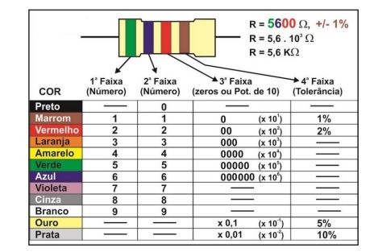

O codigo de cores dos resistores, nada mais é que uma tabela guia que mostra o que cada cor de cada linha que os resistores tem, logo ele pessa quanto cada cor vale e no final qual o percentual e APROXIMADAMENTE o quanto eles capturam.

Tabela de resistores
Fonte: slides passados em aula...